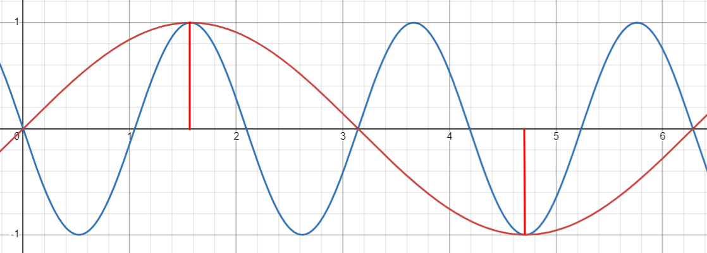

Die Sprachdatei benoetigt eine geringere Abtastfrequenz, um diese zu verstehen.
Bei Musik kommt es mehr auf bestimmt Klaenge an, welche eine hoehere Abtastfrequenz benoetigen.
Frames beschreibt die Anzahl der gesamten Frequenzabtastungen. Somit ist also sichtbar, dass Musik laenger dauert als Sprache.
Auszerdem hat Musik 2 Kanaele, also ist die Datei stereo. Sprache ist eine mono Datei.
Beide Datein nutzen 2 Bytes per sample, also haben beide jeweils pro Frame eine zusammensetzung aus low byte und high byte.
Aufgabe 1.d
Loesung
Die Bitrate berechnet man wie folgt: samplerate * frames * channels
Also hat die Musikdatei eine Bitrate von 19367838000.
Die Sprachdatei hat eine Bitrate von 316400000.
Aufgabe 2.a
sine_hi05
Bescheibung
Loesung
Wir haben die folgen Werte mit wave_io herausgefunden:
13623,-16069,16069,-13623,9102,-3196,-3196,9102,-13623,16069,-16069,13623,-9102,3196,3196,-9102,13623,-16069,16069,-13623,9102,-3196,-3196,9102,-13623,16069,-16069,13623,-9102,3196,3196,-9102,13623,-16069,16069,-13623,9102,-3196,-3196,9102,-13623,16069,-16069,13623,-9102,3196,3196,-9102,13623,-16069,16069
,-13623,9102,-3196,-3196,9102,-13623,16069,-16069,13623,-9102,3196,3196,-9102,13623,-16069,16069,-13623,9102,-3196,-3196,9102,-13623,16069,-16069,13623,-9102,3196,3196,-9102,13623,-16069,16069,-13623,9102,-3196,-3196,9102,-13623,16069,-16069,13623,-9102,3196,3196,-9102,13623,-16069,16069,-13623,9102,-3196
,-3196,9102,-13623,16069,-16069,13623,-9102,3196,3196,-9102,13623,-16069,16069,-13623,9102,-3196,-3196,9102,-13623,16069,-16069,13623,-9102,3196,3196,-9102,13623,-16069,16069,-13623,9102,-3196,-3196,9102,-13623,16069,-16069,13623,-9102,3196,3196,-9102,13623,-16069,16069,-13623,9102,-3196,-3196,9102,-13623
,16069,-16069,13623,-9102,3196,3196,-9102,13623,-16069,16069,-13623,9102,-3196,-3196,9102,-13623,16069,-16069,13623,-9102,3196,3196,-9102,13623,-16069,16069,-13623,9102,-3196,-3196,9102,-13623,16069,-16069,13623,-9102,3196,3196,-9102,13623,-16069,16069,-13623,9102,-3196,-3196,9102,-13623,16069,-16069,13623
,-9102,3196,3196,-9102,13623,-16069,16069,-13623,9102,-3196,-3196,9102,-13623,16069,-16069,13623,-9102,3196,3196,-9102,13623,-16069,16069,-13623,9102,-3196,-3196,9102,-13623,16069,-16069,13623,-9102,3196,3196,-9102,13623,-16069,16069,-13623,9102,-3196,-3196,9102,-13623,16069,-16069,13623,-9102,3196,3196
,-9102,13623,-16069,16069,-13623,9102,-3196,-3196,9102,-13623,16069,-16069,13623,-9102,3196,3196,-9102,13623,-16069,16069,-13623,9102,-3196,-3196,9102,-13623,16069,-16069,13623,-9102,3196,3196,-9102,13623,-16069,16069,-13623,9102,-3196,-3196,9102,-13623,16069,-16069,13623,-9102,3196,3196,-9102,13623,-16069
,16069,-13623,9102,-3196,-3196,9102,-13623,16069,-16069,13623,-9102,3196,3196,-9102,13623,-16069,16069,-13623,9102,-3196,-3196,9102,-13623,16069,-16069,13623,-9102,3196,3196,-9102,13623,-16069,16069,-13623,9102,-3196,-3196,9102,-13623,16069,-16069,13623,-9102,3196,3196,-9102,13623,-16069,16069,-13623,9102
,-3196,-3196,9102,-13623,16069,-16069,13623,-9102,3196,3196,-9102,13623,-16069,16069,-13623,9102,-3196,-3196,9102,-13623,16069,-16069,13623,-9102,3196,3196,-9102,13623,-16069,16069,-13623,9102,-3196,-3196,9102,-13623,16069,-16069,13623,-9102,3196,3196,-9102,13623,-16069,16069,-13623,9102,-3196,-3196,9102
,-13623,16069,-16069,13623,-9102,3196,3196,-9102,13623,-16069,16069,-13623,9102,-3196,-3196,9102,-13623,16069,-16069,13623,-9102,3196,3196,-9102,13623,-16069,16069,-13623,9102,-3196,-3196,9102,-13623,16069,-16069,13623,-9102,3196,3196,-9102,13623,-16069,16069,-13623,9102,-3196,-3196,9102,-13623,16069,-16069
,13623,-9102,3196,3196,-9102,13623,-16069,16069,-13623,9102,-3196,-3196,9102,-13623,16069,-16069,13623,-9102,3196,3196,-9102,13623,-16069,16069,-13623
Nun haben wir gezaehlt, wie oft die Werte ihr vorzeichen geaendert haben (n).
Teilt man n durch die Anzahl der Werte bekommt man die Frequenz der Schnittpunkte mit der x Achse (f).
Da eine Periode immer 2 Schnittpunkte hat, teilen wir also f durch 2. Diesen Wert muessen wir noch mit der Sampling Frequenz multiplizieren.
Somit haben wir 7008.0 Hz als Frequenz der Sinusschwingung ausgerechnet.
In Praat haben wir den Wert 7000 abgelesen.
sine_lo05
Bescheibung
Loesung
Wir haben die folgen Werte mit wave_io herausgefunden:
-13623,-9102,-3196,3196,9102,13623,16069,16069,13623,9102,3196,-3196,-9102,-13623,-16069,-16069,-13623,-9102,-3196,3196,9102,13623,16069,16069,13623,9102,3196,-3196,-9102,-13623,-16069,-16069,-13623,-9102,-3196,3196,9102,13623,16069,16069,13623,9102,3196,-3196,-9102,-13623,-16069,-16069,-13623,-9102,-3196,3196,9102,13623,16069,16069,13623,9102,3196,-3196,-9102,-13623,-16069,-16069,-13623,-9102,-3196,3196,9102,13623,16069,16069,13623,9102,3196,-3196,-9102,-13623,-16069,-16069,-13623,-9102,-3196,3196,9102,13623,16069,16069,13623,9102,3196,-3196,-9102,-13623,-16069,-16069,-13623,-9102,-3196,3196,9102,13623,16069,16069,13623,9102,3196,-3196,-9102,-13623,-16069,-16069,-13623,-9102,-3196,3196,9102,13623,16069,16069,13623,9102,3196,-3196,-9102,-13623,-16069,-16069,-13623,-9102,-3196,3196,9102,13623,16069,16069,13623,9102,3196,-3196,-9102,-13623,-16069,-16069,-13623,-9102,-3196,3196,9102,13623,16069,16069,13623,9102,3196,-3196,-9102,-13623,-16069,-16069,-13623,-9102,-3196,3196,9102,13623,16069,16069,13623,9102,3196,-3196,-9102,-13623,-16069,-16069,-13623,-9102,-3196
Wir haben 983.0 Hz als Frequenz der Sinusschwingung ausgerechnet.
In Praat haben wir den Wert 960 abgelesen.
Aufgabe 2.b
Loesung
Die Werte waren ziemlich aehnlich, jedoch etwas unterschiedlich. Das liegt wahrscheinlich daran, dass bei unserer Messung nur ein kleiner Teil der Werte in Analyse gezogen wurden.
Aufgabe 2.c
Loesung
Das Abtasttheorem besagt, dass die Abtastfrequenz mindestens doppelt so hoch wie die Tonfrequenz sein muss, um das Signal aus den Abtastwerten wieder zu rekonstruieren. Wenn das Theorem nicht eingehalten wird, wird das Signal verzehrt
Der Grenzfall beschreibt das Verhältnis von 2:1. Was bedeutet, dass eine Periode maximal zwei Amplituden sind, es muss also mindestens zwei Abtastpunkte in einer Periode geben.
sin(x) und sin(-3x) beides kurven interpolieren die Nullstellen und Extremstellen von sin(x), jedoch hat sin(-3x) offensichtlich die dreifache Frequenz

Im Graphen sehen wir, dass wir die Abtastpunkte mit einer 1/3 Frequenz interpolieren können.
Aufgabe 2.d
Loesung
Jede Soundkarte hat einen Anti-Aliasing Filter (Tiefpass Filter). Dort werden auch zu hohe Frequenzen entfernt.
Aufgabe 2.e
Loesung
Aufgabe 2.f
Loesung
sine_lo05_downsampled
sine_hi05_downsampled
Wir haben festgestellt, dass beide Frequenzen auf 1000 Hz gesetzt wurden.
Wenn man die Abtastfrequenz ausreichend setzten wuerde, dann wuerden die Frequenzen gleich bleiben.
Aufgabe 2.g
Loesung
Sprache_Gruppe4
sprache4_downsampled
Durch die verrigerte Abtastrate fallen die hohen Frequenzen weg. Man versteht die Sprache dennoch gut, da die meisten Frequenzen die in der Sprache sind noch vorhanden sind.
Aufgabe 3.a
Loesung
16 Bit:
Die Range bei 16 Bit ist von -32,768 bis 32,767, also 2^16 Bits.
8 Bit:
Bei 8 Bit ist diese von -128 bis 127, also 2^8 Bits
Aufgabe 3.b
Loesung
Aufgabe 3.c
Loesung
Sprache_Gruppe4
Sprache_Gruppe4 bit reduced
Musik_Gruppe4
Musik_Gruppe4 bit reduced
Aufgabe 3.d
Loesung
Bei der ganzzahligen Division entstehen Rundungsfehler, welche zu Rauschen führen. Dieses Rauschen ist dann Quantisierungsrauschen.
Aufgabe 3.e
Loesung
Aufgabe 3.f
Loesung
Wenn das Signal um 1 Bit reduziert wird, wird dieses durchgängig. Mit zunehmender Reduzierung wird der Charakter ungleichmäßiger, da das Differnzsignal dem Originalsignal immer ähnlicher wird